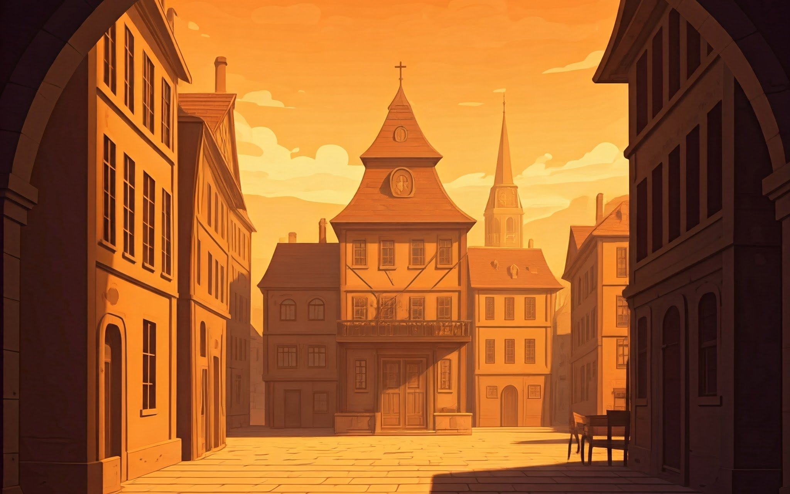

Histórias relaxantes
Um café para relaxar

Descubra a história de um café de esquina, herdado por Miguel de seus pais, que se torna um refúgio para aqueles que estão precisando de um lugar para desopilar e relaxar.
Um gênero musical calmante
Já pensou que podemos criar nossos próprios gêneros musicais? Acompanhe o desenvolver da criação de um novo gênero musical criado por Elara em sua jornada emocionante.

A Cidade dos Sonhos
Embarque nessa história de superação e realização, onde Lucian transforma seu sonho de construir sua própria cidade sustentável e em harmonia em realidade.